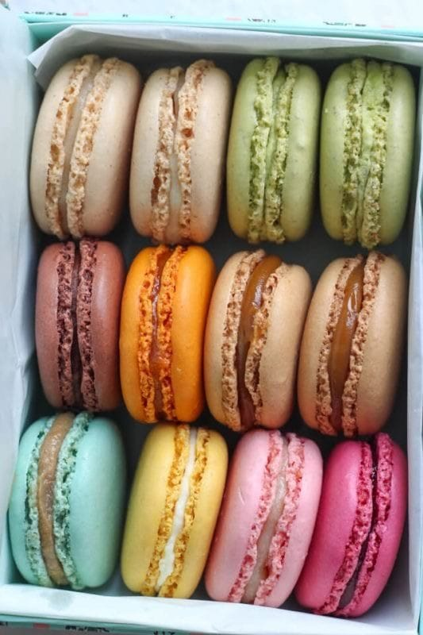
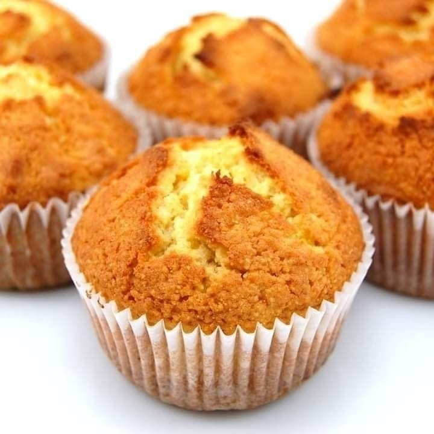

Nuestros Productos

macarrons
Precio: S/20

Mufins de chocolate
Precio: S/22

Mufins
Precio: S/18
Es una experiencia sensorial diseñada para celebrar cada momento especial en la vida. Cada muffin y macaron que creamos está impregnado de pasión y dedicación, transformando ingredientes frescos en delicias que cautivan el paladar y despiertan emociones. Nos esforzamos por ofrecer un producto que no solo satisface el anhelo de algo dulce, sino que también deleita a la vista con presentaciones artísticas y cuidadas. Además, creemos que cada bocado debe contar una historia. Ya sea un cumpleaños, una boda o simplemente un capricho personal, estamos aquí para hacer de cada ocasión un momento memorable. Nuestra atención al detalle y nuestro compromiso con la calidad nos distinguen, y estamos orgullosos de ser parte de las celebraciones de nuestros clientes. Te invitamos a descubrir un mundo dulce y elegante donde cada producto es una obra maestra de la repostería fina. Ven a compartir con nosotros la alegría de disfrutar de sabores únicos y momentos inolvidables. ¡Te esperamos con los brazos abiertos y un delicioso muffin o macaron en la mano!
Misión: Endulzar cada momento con productos de repostería de alta calidad, elaborados con ingredientes frescos y técnicas artesanales.
Visión: Ser la pastelería líder, reconocida por nuestra innovación, creatividad y excelencia en el servicio.
macarrons
Precio: S/20
Mufins de chocolate
Precio: S/22
Mufins
Precio: S/18